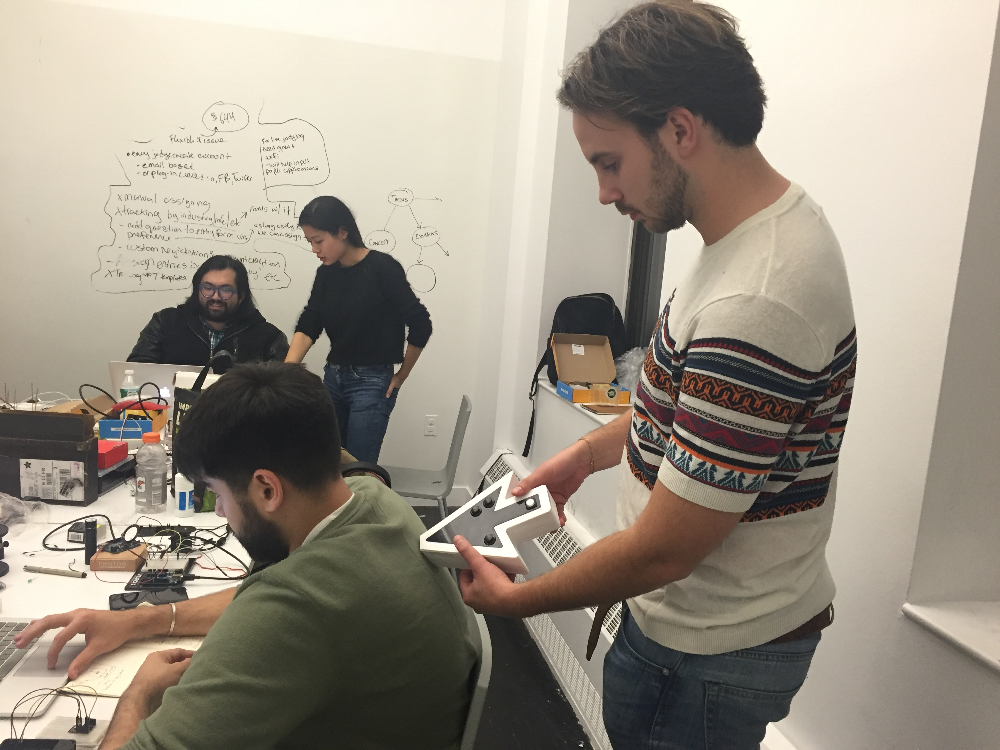
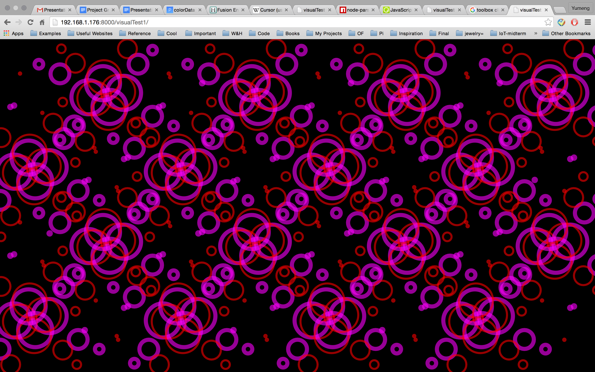
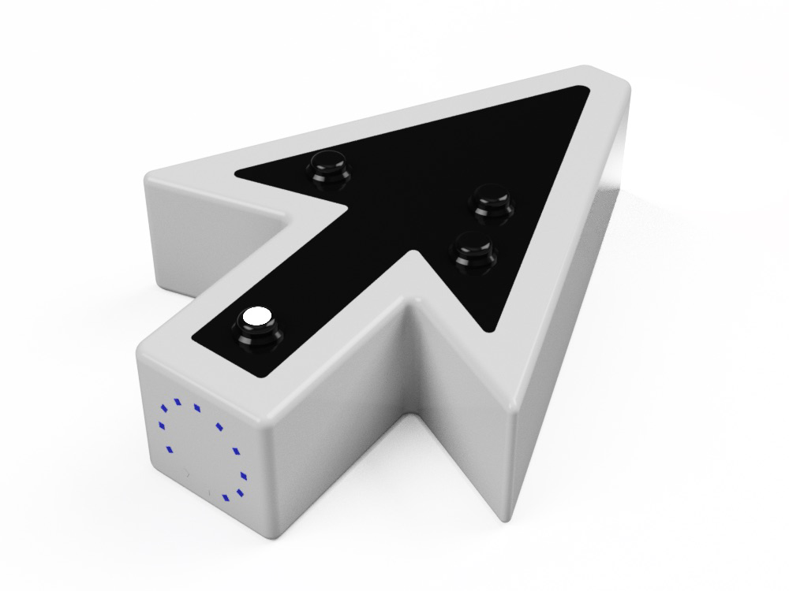
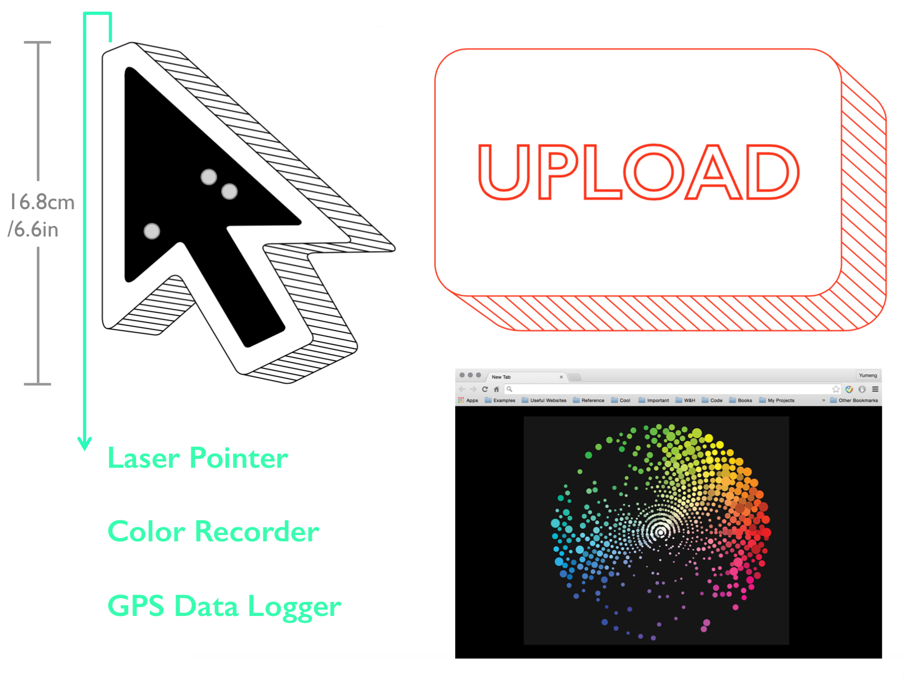
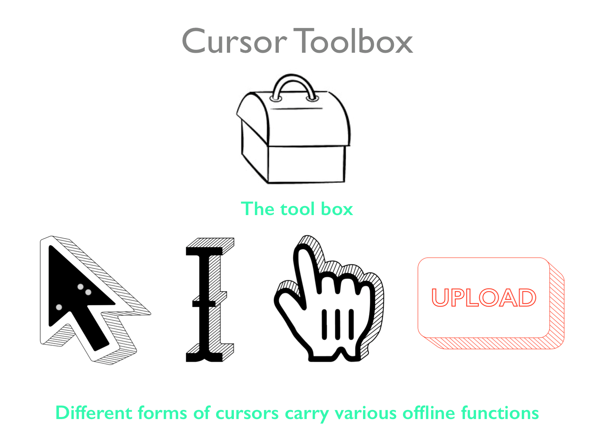
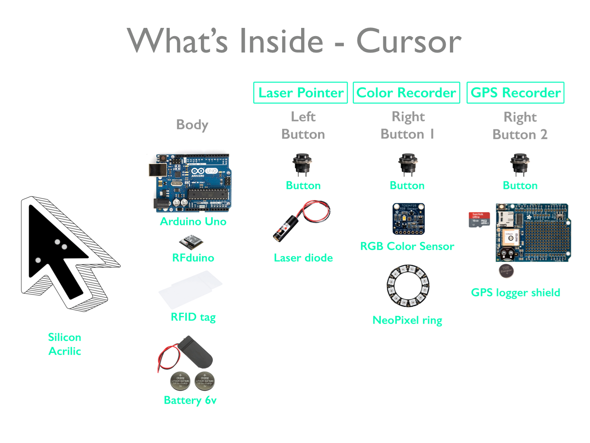
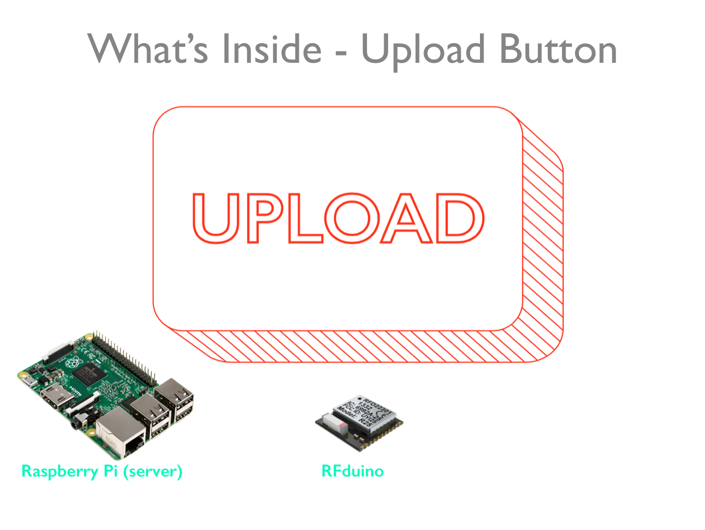
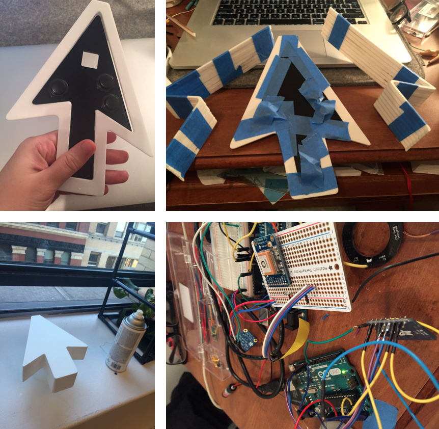

Cursor Toolbox
Cursor Toolbox is a system that translates the online experience to real life and uploads it back online. It consists of a toolbox of different forms of physical “cursors” with various functions (for midterm, I made the “pointer cursor” and the red “upload button”). The user is able to record colors, GPS data, and point at object with laser, which respectively correspond to the three functions of the actual cursor on the computer: saving images, saving URLs and navigation. All data are stored temporarily on a micro SD card inside of the cursor. When the user gets home, he/she can put the cursor on the “upload button”, so that the data can be transferred to a web server through RFDuino Bluetooth transmission and serial reading on a Raspberry Pi inside of the button. A P5.js sketch is served on the Pi as the visualization of the recorded data, showing the color and the processed GPS data (the GPS data has not been input into the website in the current phase). Meanwhile, for each time of “uploading”, two colors are randomly selected from the color recording file and pushed into the database on Parse. Ideally, these color data can be utilized in the future as a palette from which the user can pick the color and draw on the screen.
The goal of Cursor Toolbox is to address on the issue that physical interactions are diminished by online activities. The shift from offline to online has tremendous impact on our communications, relationships and social interactions, inspiring the future of communication, social structures and human-machine interface, as well as causing unprecedented problems: apathy of physical contacts, digital abuse, online privacy, etc. Therefore, this project aims to re-emphasize the significance of offline activities and explores its connections back to the digital world. It uses the features of online behaviors as the lens to observe and magnify our offline life, facilitating physical interactions between people. As the bridge between online and offline, the system in this project also develops new possibilities for interactions and behaviors in the built environments.
The devices in this project take forms of identical computer interface icons. Through the explicit representations of the digital navigation tools, which defines and also limits the online experience, these devices investigate how digital/online tools have shaped the ways that we perceive the reality. In addition, the dual nature of the digital icons and their physical counterparts reflect on the idea that various social issues also exist online and offline that relate or contribute to each other. However, until now the functions of the devices focus merely on the actions that engage interactions between people and their environments.
Visualization of GPS data:
3D model of the device:
Diagrams and components:
   Building process: The enclosure was laser cut with acrylic, assembled, and sprayed with white rubber.
